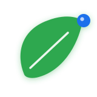

Plano Técnico Oficial de Ingeniería · Con Logotipo SymbioTierra


Plano Técnico Aprobado · UNIMAR Ingeniería de Sistemas · Sello de Identidad CorporativaInicializando ecosistema...
Restauramos ecosistemas degradados combinando biotecnología fúngica, drones autónomos e inteligencia artificial. Donde la naturaleza tarda décadas, nosotros actuamos en meses.
En la Amazonía y los Andes venezolanos, la deforestación y la minería ilegal destruyen hectáreas en días. Los métodos de siembra tradicional toman décadas en sanar la tierra.
Pérdida masiva de cubierta vegetal en zonas críticas del sur de Venezuela y la cuenca amazónica, inaccesibles para brigadas a pie.
Suelos erosionados sin micorrizas ni microbioma activo, donde plantar semillas convencionales resulta en más del 80% de mortandad.
Ríos y cuencas contaminadas por sedimentación y metales pesados. Ningún competidor actual en la región restaura tierra y agua simultáneamente.
Hardware y software como servicio: un flujo autónomo de 3 fases que reduce el tiempo de restauración en un 70% y elimina el riesgo humano en zonas inaccesibles.
Enjambres de drones autónomos equipados con sensores multiespectrales e hiperespectrales sobrevuelan la zona, generando mapas 3D térmicos y de composición bioquímica de suelos y aguas.
Los drones ejecutan rutas de bombardeo balístico de precisión disparando Bio-Cápsulas con micelio fúngico y semillas endémicas en tierra, y esferas biodegradables de biopolímeros en cuerpos de agua para neutralizar contaminantes.
Se despliega una red de micro-sensores IoT de bajo consumo que transmiten datos ambientales en vivo. El cliente sigue minuto a minuto la fijación de CO₂, regeneración biológica y calidad hídrica.
Modelo tridimensional interactivo de precisión con el logotipo e icono oficial de SymbioTierra integrado en la cúpula dorsal y costados. Gira, haz zoom e inspecciona cada subsistema de vuelo, sensores hiperespectrales y dispersión de Bio-Cápsulas.
Cámara estabilizada en gimbal de 3 ejes. Escanea índices NDVI, calidad hídrica y niveles de turbidez en tiempo real para determinar puntos exactos de dispersión.
Una píldora tecnológica recubierta de bioplástico biodegradable con el código genético y fúngico necesario para reactivar un bosque completo.
Pasa el cursor por las capas para explorar su composición
Protege el núcleo durante la caída libre balística a más de 120 km/h. Se degrada orgánicamente con la radiación solar y la humedad en menos de 72 horas sin dejar residuos sintéticos.
Activa redes subterráneas de intercambio de nutrientes, reteniendo agua y multiplicando la absorción de minerales por la raíz hasta en un 300% en suelos áridos o contaminados.
Especies endémicas venezolanas (Araguaney, Apamate, Bucare, Frailejón andino) seleccionadas por su resistencia y capacidad de fijación de carbono y nitrógeno.
Hidrogel orgánico que almacena hasta 50 veces su peso en agua, garantizando humedad durante los primeros 45 días críticos de germinación incluso en sequías severas.
Hardware, inteligencia artificial y biotecnología fúngica convergiendo para automatizar la restauración ecológica a escala industrial.
Redes neuronales que coordinan trayectorias sin colisión para hasta 20 drones simultáneos, adaptándose a turbulencias andinas y vientos amazónicos.
Chasis de fibra de carbono reforzada con tolvas de liberación neumática capaces de disparar 500 Bio-Cápsulas por hora por unidad con precisión milimétrica.
Laboratorios de cultivo de micelio endémico que reactivan la simbiosis planta-hongo en suelos estériles degradados por metales o quemas.
Estaciones flotantes y terrestres autónomas con baterías solares y enlace satelital LoRaWAN que miden pH hídrico, humedad de suelo y CO₂ en tiempo real.
Plataforma para clientes corporativos y gubernamentales con mapas de calor interactivos, índices NDVI y métricas auditables de cumplimiento ambiental.
Esferas filtrantes que eliminan turbidez y neutralizan trazas de hidrocarburos y químicos sin generar subproductos tóxicos.
A diferencia de los reportes en papel o Excel de las consultoras tradicionales, SymbioTierra entrega un portal web interactivo y app móvil con telemetría en vivo de cada metro cuadrado regenerado.
Restaurar ecosistemas completos combinando biotecnología y robótica autónoma, devolviendo el equilibrio a ambientes degradados en tiempo récord y democratizando el acceso a datos ambientales para nuestros clientes.
Convertirnos para 2035 en la plataforma estándar de regeneración ambiental en toda América Latina, siendo pioneros en revertir los efectos del cambio climático mediante tecnología autónoma escalable a nivel continental.
Cinco áreas directivas perfectamente coordinadas de la Universidad de Margarita, con roles asignados y dominio integral del modelo de negocio DeepTech.
Negociación de contratos a gran escala (B2G/B2B), representación en rondas de inversión y dirección estratégica de los hubs de Mérida y Puerto Ordaz.
Desarrollo de los algoritmos de vuelo en enjambre, mapeo 3D hiperespectral y arquitectura de la plataforma de monitoreo IoT.
Diseño UI/UX de la plataforma de clientes, identidad corporativa, modelado 3D, stands para ferias tecnológicas y campañas de captación B2B.
Tramitación de licencias UAV ante el INAC, certificaciones ambientales con el Ministerio de Ecosocialismo y registro de patentes de Bio-Cápsulas.
Estructuración de costos operativos de importación, monetización por hectárea intervenida, valorización de activos y flujo de caja para inversionistas.
Modelo de negocio HaaS/SaaS con altos márgenes brutos y un retorno de inversión en 11 meses.
Simula la intervención ambiental y económica según la superficie a restaurar con el sistema Eco-Enjambre V3.
Preparación rigurosa ante jurados e inversionistas: fundamentación técnica, legal y financiera de SymbioTierra.
Porque la reforestación tradicional es lenta, manual y peligrosa en zonas agrestes. Al estudiar imágenes satelitales de la deforestación y la contaminación hídrica en el sur de Venezuela y la Amazonía, el equipo de Ingeniería de Sistemas de UNIMAR comprendió que la velocidad de degradación solo puede ser superada mediante automatización industrial escalable: enjambres de drones coordinados por IA y biotecnología fúngica acelerada.
Las fundaciones tradicionales y consultoras ofrecen siembra manual y reportes estáticos en papel o Excel que tardan meses. SymbioTierra es la única solución que interviene tierra y agua simultáneamente de forma 100% autónoma, reduciendo los tiempos en un 70% y brindando al cliente un Dashboard de Impacto en tiempo real con datos auditables para el cumplimiento de RSE y normativas ecológicas.
La valoración se basa en la propiedad intelectual propietaria (algoritmos de IA de enjambre y patentes de las Bio-Cápsulas) y en el potencial de escalabilidad continental (mercado objetivo en Venezuela, Brasil y Colombia). Con $150.000 USD por el 10% de participación, se establecerán los dos laboratorios de biotecnología fúngica en Mérida y Puerto Ordaz y se fabricarán los primeros 5 enjambres operativos. El punto de equilibrio se alcanza en solo 165 hectáreas (11 meses) con un margen bruto del 58% ($700 por hectárea).
El área Legal (CLO Luis Soto) tiene estructurada la tramitación de permisos de vuelo y certificación de pilotos UAV ante el INAC (Instituto Nacional de Aeronáutica Civil), la certificación de impacto ambiental y uso exclusivo de especies nativas no invasivas ante el Ministerio de Ecosocialismo, y el registro de patentes de las Bio-Cápsulas y propiedad intelectual de software ante el SAPI.
El principal riesgo es no levantar el capital ángel en el tiempo proyectado. Para mitigarlo, se contempla un modelo de preventa escalonada de hectáreas a corporaciones agrícolas y extractivas obligadas por ley a cumplir cuotas de mitigación, lo que permite financiar el hardware mediante contratos iniciales B2B antes de requerir rondas de capital de riesgo mayores.
Buscamos $150.000 USD de inversión ángel por el 10% de participación accionaria para construir los laboratorios fúngicos en Mérida y Puerto Ordaz y desplegar los primeros 5 enjambres operativos.
Establecimiento de los laboratorios en Mérida y Puerto Ordaz. Fabricación de los primeros 5 enjambres Eco-Enjambre V3.
Alianzas consolidadas con 2 ministerios y 3 grandes corporaciones. Despliegue en Andes y cuenca del río Caroní.
Expansión transfronteriza a la Amazonía compartida con Brasil y Colombia. Lanzamiento de «Micro-drones polinizadores» agrícolas.
Consolidación como la plataforma de referencia en regeneración ecológica y mitigación climática en América Latina.

Plano Técnico Aprobado · UNIMAR Ingeniería de Sistemas · Sello de Identidad Corporativa